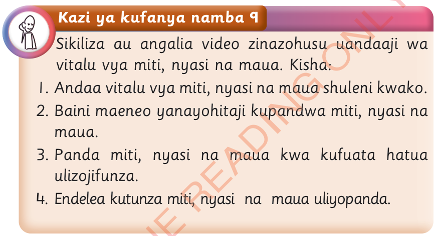

Kazi ya kufanya namba 9
Sikiliza au angalia video zinazohusu uandaaji wa vitalu vya miti, nyasi na maua.
Kisha:
1.
Andaa vitalu vya miti, nyasi na maua shuleni kwako.
2.
Baini maeneo yanayohitaji kupandwa miti, nyasi na maua.
3.
Panda miti, nyasi na maua kwa kufuata hatua ulizojifunza.
4.
Endelea kutunza miti, nyasi na maua uliyopanda.